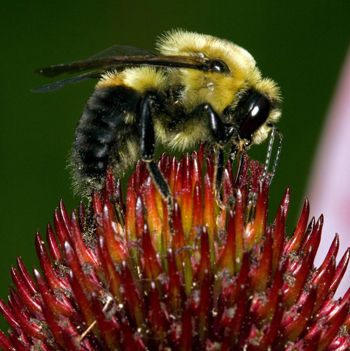

Bumble bees (Bombus spp.)

Bumble bee colonies are much smaller than those of honey bees, but the bees are strong and robust. They work under cooler and damper conditions than honey bees.
Bumble bees do not produce significant quantities of honey. Nectar is only stored temporarily, because only mated queens overwinter. In the wild, the mated queen emerges in the spring, finds a suitable nesting site, and raises the first brood of workers by herself. The queen then remains in the nest and focuses on egg-laying. Workers take over foraging, cell-building, and tending the young. When the colony reaches sufficient size, the next generation of reproductive queens and males is produced and mating occurs. At this point, the mated queens disperse and social structure of the original colony begins to break down. The founding queen dies in the fall, and only the young, newly mated queens hibernate over the winter. In the spring, the process begins again.
A commercial bumble bee industry (using the common eastern bumble bee-Bombus impatiens) is now fully established in Ontario, especially for the pollination of greenhouse crops. Due to wise regulations against importation of bumble bees from outside their native range, other species are not available.

A Bombus impatiens colony (photo by Stephen Marshall)
Commercial bumble bee providers have manipulated the bumble bee colony life cycle using indoor rearing and husbandry to make mature colonies continuously available to customers throughout the entire greenhouse growing season.
Bumble bees have either been used successfully or show promise for commercial pollination in several outdoor crops. This includes tree fruits that bloom in early spring when it is still too cold for honey bees, and crops that require "buzz” pollination (see box).
So far, the greatest commercial success with bumble bee pollination has been in greenhouse tomatoes and sweet peppers. Unlike honey bees, bumble bees are quite willing to forage in the still and humid greenhouse air and do not become disoriented in greenhouse conditions.
See Vendors – Managed Pollinators under More Information.
References
Kevan, P.G., Straver, W.A., Offer, M., & Laverty, T.M. 1991a. Pollination of greenhouse tomatoes by bumble bees in Ontario. Proceedings of the Entomological Society of Ontario 122:15-19.
Morandin, L.A., Laverty, T.M., & Kevan, P.G. 2001a. Bumble bee (Hymenoptera: Apidae) activity and pollination levels in commercial tomato greenhouses. Journal of Economic Entomology 94:462-467.
Paarmann, W. 1977. Studies in the role of bumble bees (Bombus spp.) in fruit tree pollination. Zeitschrift für Angewandte Entomologie 84:164-178.
Velthuis, H.H.W. & van Doorn, A. 2006. A century of advances in bumblebee domestication and the economic and environmental aspects of its commercialization for pollination. Apidologie 37:421-451.
**For more detailed information and references, download the following: Woodcock, T.S. 2012. Pollination in the agricultural landscape: best management practices for crop pollination. University of Guelph. 113 pp.